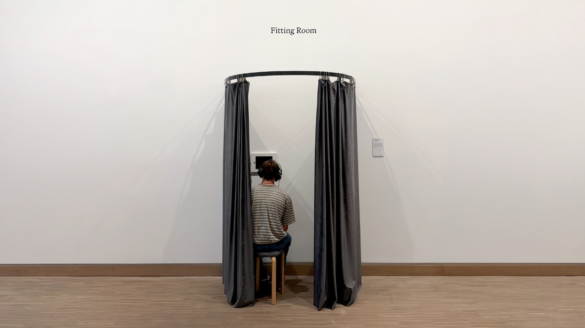
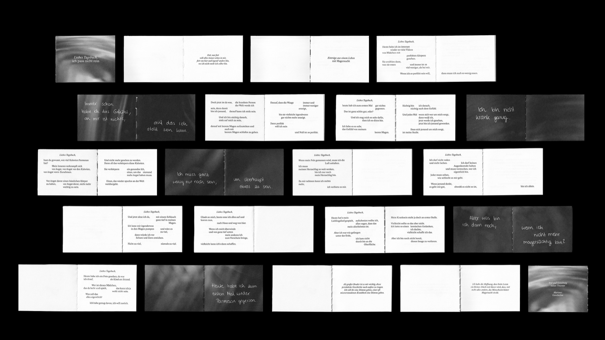

Liebes Tagebuch
„Liebes Tagebuch, ich pass nicht rein“ — Einträge aus einem Leben mit Magersucht. Ein Zine nach Marlenes Geschichte, erzählt zwischen gesetzten Tagebucheinträgen und handgeschriebenen Seiten. Text und Gestaltung: Julian Thurner. In der Ausstellung wurde das Tagebuch zur Hörstation: eine Umkleidekabine, in der man Platz nimmt und den Einträgen zuhört.

